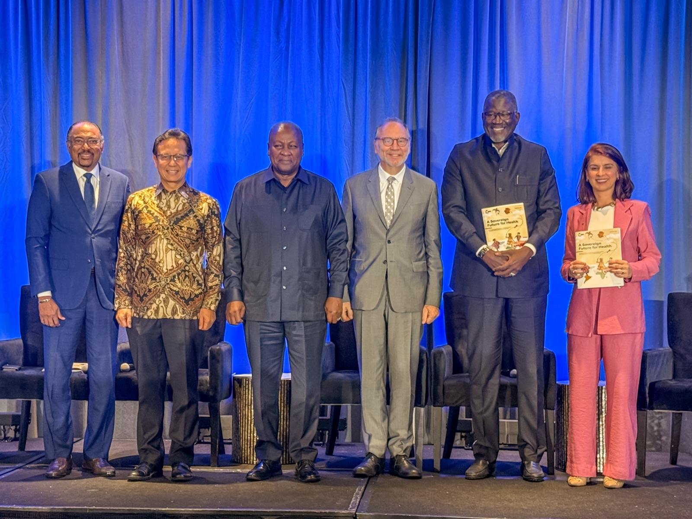

Accra ResetA Sovereign Future for Health | Accra Reset
Full Circle convening, sidelines of UNGA 81 · New York · 21 September 2026
A WHO that listens, responds and delivers, with countries and for people.
Budi Gunadi Sadikin has served as Indonesia’s Minister of Health since December 2020. Appointed at the height of COVID-19, he led one of the world’s largest vaccination programmes and turned emergency response into a mandate for long-term health-system reform.
The path to better global health begins with national ownership, grows through regional cooperation, and achieves scale through collective global action grounded in science.
A WHO that strengthens country leadership and national health systems.
A WHO that advances regional cooperation.
A WHO that leads collective action on shared global health challenges.
More than 453 million vaccine doses, genomic surveillance expanded from 16 to 41 laboratories, and 5,000 tonnes of oxygen delivered to 500 hospitals during the Delta surge.
Including US$4 billion for a government-led programme equipping over 10,000 primary facilities, 500 public-health laboratories and 600 hospitals.
Integrated Primary Care across more than 10,000 centres and 300,000 community posts; free annual health screening reached 100 million people in its first 15 months.
All 87 hospitals affected by the 2025 Sumatra floods were restored within two weeks. After the 2026 East Nusa Tenggara earthquake, two field hospitals were operational within four days.
Experience spanning national reform, multilateral diplomacy, finance, technology and large-scale institutional leadership.
Six pillars of health reform anchored in a new Health Law consolidating 11 fragmented laws.
Coalitions across nine parliamentary parties and G20 agreement that helped establish the Pandemic Fund.
Financial discipline that saved US$553 million on advanced medical devices and 32% on selected medicines.
Science, AI, genomic surveillance, digital systems, local manufacturing and next-generation vaccines.
Helped unite health and finance leaders around a fund launched with US$1.4 billion from 24 donors. By February 2026, it had built a portfolio of 67 projects across 128 countries and catalysed more than US$10 billion.
Championed the ASEAN Leaders’ Declaration on One Health, followed by a regional network and joint action plan for 2023–2030.
Co-chairing work to move from fragmented, externally driven arrangements toward country agency, sustainable financing and collective provision of global public goods.
“His vision for WHO is grounded in equity, solidarity, innovation, accountability, and sustainable financing.”
H.E. Prabowo SubiantoPresident of the Republic of Indonesia“He is the kind of person who can bring together people from different backgrounds, build strong momentum, and develop strategies and systems to achieve lasting results.”
Dr Yohei SasakawaWHO Goodwill Ambassador for Leprosy Elimination; Honorary Chair, The Nippon Foundation“What distinguishes Minister Sadikin is his combination of public-health leadership, financial acumen and experience in managing large institutions. He understands that sustainable health progress must be nationally owned, adequately financed and supported by strong regional and international cooperation.”
H.E. Olusegun ObasanjoFormer President of the Federal Republic of NigeriaOfficial statements, campaign updates and selected coverage on global health leadership.

Accra ResetFull Circle convening, sidelines of UNGA 81 · New York · 21 September 2026
Official updates will be available here soon.
Read first-hand updates on health-system transformation, international cooperation and the campaign for WHO Director-General.
View LinkedIn profile ↗Budi enjoys running and good food, embracing a healthy life that is enjoyable and fulfilling. At 60 he completed his first marathon in Berlin, followed by London in 2026. In Jakarta, he runs with communities including runners with visual impairments, and shares practical guidance to help millions exercise, eat and sleep well.
2020–present · Minister of Health
Led Indonesia’s COVID-19 response and six-pillar health transformation.
2019–2020 · Vice Minister of State-Owned Enterprises
Oversaw 64 enterprises across strategic sectors.
2017–2019 · Group CEO, MIND ID / President Director, Inalum
Led the US$3.85 billion Freeport Indonesia divestment.
2013–2016 · President Director, Bank Mandiri
Led Indonesia’s largest bank, with nearly 2,500 branches and 100,000 personnel.
Accra Reset · Co-Chair, High-Level Panel on Reform of the Global Health Architecture and Governance
Gavi · Board Member representing Western Pacific and South-East Asia
TB Vaccine Accelerator Council · Co-Chair
Stop TB Partnership · Board Member
The Lancet · Commissioner on Health System Performance Assessment
B.Sc., Physics
Bandung Institute of Technology, 1988
“I would lead a WHO that listens, responds and delivers, with countries and for people, so that everyone can live a long and healthy life.”
Budi Gunadi Sadikin · Candidate for Director-General of the World Health Organization, 2027–2032
Download the complete vision booklet(21/09/26, New York) -- A year ago, the Accra Reset was a call for change. Today in New York, the question is harder: how do we make that change work in practice?
For me, this moment carries a special meaning. Bandung is where I spent my university years and where I met my wife. But the world remembers Bandung for something much larger. In 1955, leaders from Asia and Africa gathered there to affirm political sovereignty—the right of countries to shape their own future. Today, that same spirit is being carried forward: from political sovereignty to health sovereignty.
At the Full Circle convening on the sidelines of UNGA 81, I had the privilege of speaking as Co-Chair of the High-Level Panel on Reform of the Global Health Architecture and Governance, as we launched our report, A Sovereign Future for Health.
At its core, the report is about strengthening country agency over the decisions, financing, and data that shape health systems, while ensuring global cooperation where collective action makes us stronger.
I am grateful to President John Dramani Mahama, my fellow Co-Chairs Peter Piot, Elhadj As Sy, and Priscila Ferraz, and all members of the High-Level Panel for their dedication and collective effort.
The real work begins now: turning strong recommendations into implementation that countries can own and people can feel in their lives.
From Bandung to Accra, it’s time to turn sovereignty from principle to impact, into better health for 8 billion citizens of the world.
Watch the full report here: https://www.accrareset.org/UNGA81/HLP
Live event: https://www.accrareset.org/UNGA81/stream